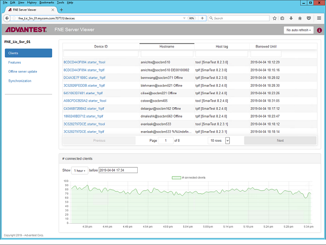
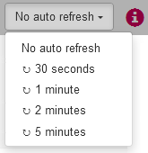
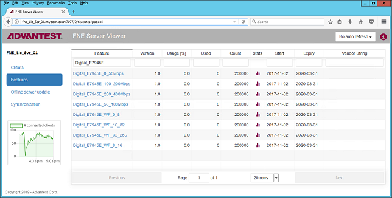
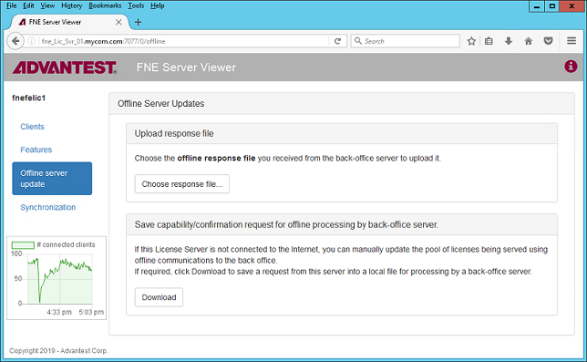
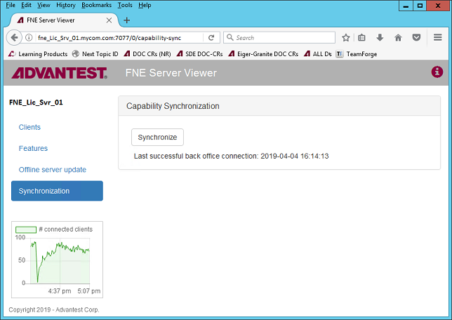

Monitoring license servers using the FNE Server Viewer
The FNE Server Viewer is a web-based application that can be used to monitor Advantest license servers.
The FNE Server Viewer runs only on the license server, enabling you to easily check:
- Status of the license server
- List of the available licenses
- List of the checked-out licenses
Supported web browsers
The Licensing Portal is supported on the following web browsers:
- Google Chrome
- Mozilla Firefox
Starting the FNE Server Viewer
Start the FNE Server Viewer by entering the following URL in a web browser:
http://<server_name>:7077
The FNE Server Viewer opens in the web browser and includes the following pages:
- Clients
- Features
- Offline server update
- Synchronization
Clients
The Test systems page displays the Advantest test systems (license clients) that have checked out licenses from the FNE license server.

The Auto Refresh control provides refresh interval options. No auto refresh can also be selected.

Features
The Features page displays the licenses available for allocation on the server and their details:

The Auto Refresh control provides refresh interval options. No auto refresh can also be selected.
Offline Server Update
For FNE license servers not connected to the Internet, using the Offline Server Update page, you can upload and download license content files for :
- Activation
- Re-hosting
- Renewal

Synchronization
The Synchronization page contains the Synchronize control used to synchronize FlexNet Embedded license servers with the Advantest License back-office.

Functional changes
- Introduced in SmarTest 8.2.5